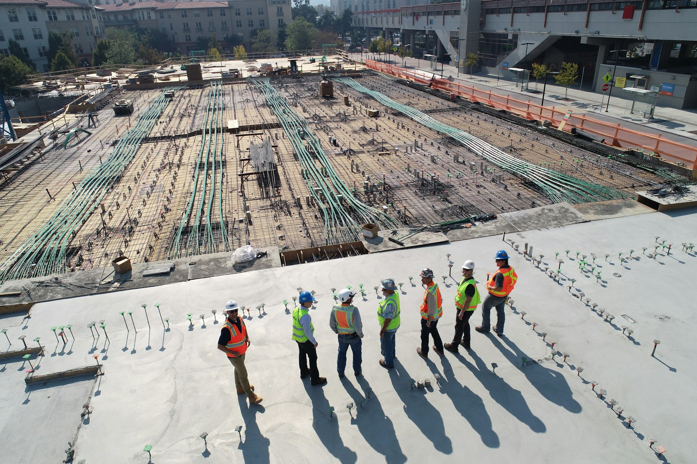
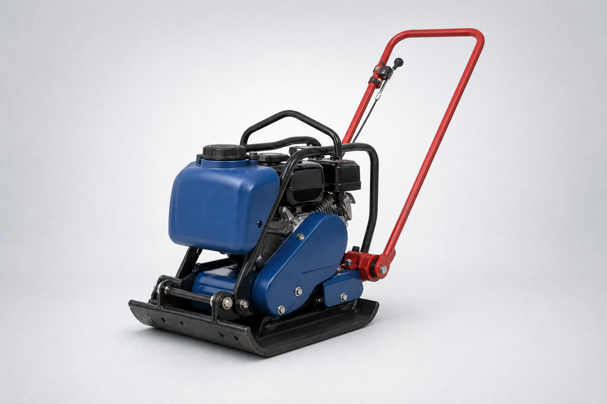
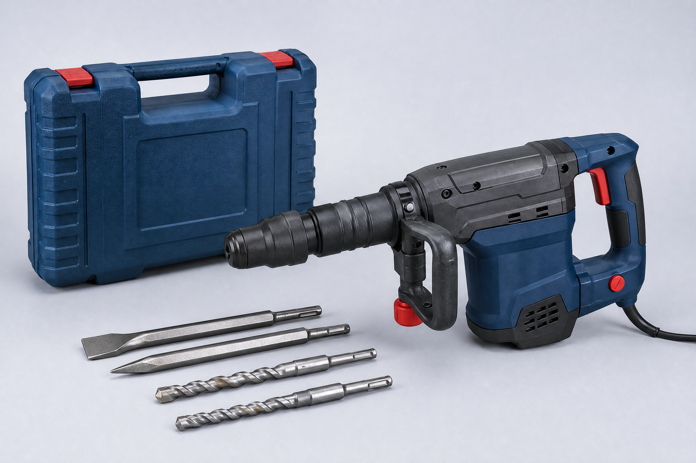

CATÁLOGO / CATEGORIAS
Categorias
Encontre equipamentos de acordo com o tipo de serviço e avance com mais clareza na sua obra.

Encontre equipamentos de acordo com o tipo de serviço e avance com mais clareza na sua obra.
Escolha uma categoria para ver os equipamentos disponíveis e encontrar a solução mais prática para o seu projeto.

Apoio para montagem, acesso e manutenção em diferentes etapas da obra.
Ver equipamentos
Equipamentos para preparar concreto e argamassa com mais ritmo e controle.
Ver equipamentos
Soluções para preparar, nivelar e compactar o solo antes da próxima etapa.
Ver equipamentos
Ferramentas elétricas para perfurar, quebrar, ajustar e terminar o serviço.
Ver equipamentosFontes de energia auxiliares para manter o trabalho até a demanda onde for preciso.
Ver equipamentos